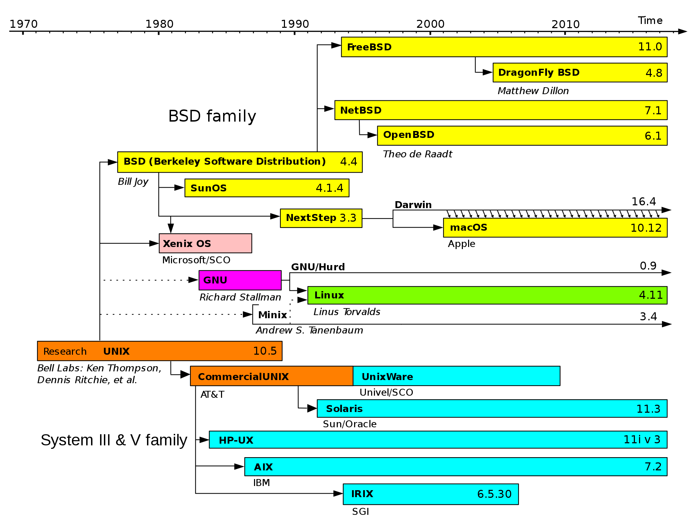

Beginners’ Guide to the Terminal

September 10 2024
Slides
hckr.cc/ht-terminal-slides
About Me
Hi! I’m Chun Yu. I’m a Year 4 Computer Science Undergrad who loves hacking and building systems.
Overview
By the end of this session, you should be able to:
- Not get confused when you see a terminal with a blinking cursor
- Not blinding copy and paste magical commands without knowing what they do
- Be somewhat productive with a terminal
Required Software
- If you’re on macOS or Linux, you should be all set!
- If you’re on Windows, you should try using WSL, it’s pretty decent!
Open up a powershell as administrator and run:
wsl --installWhat is Unix?
- tldr: very old operating systems that modern OSes take inspiration from
